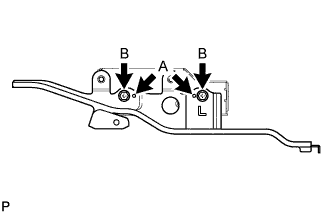
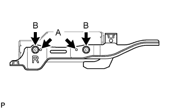
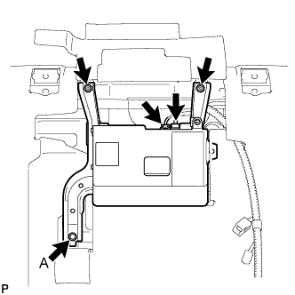
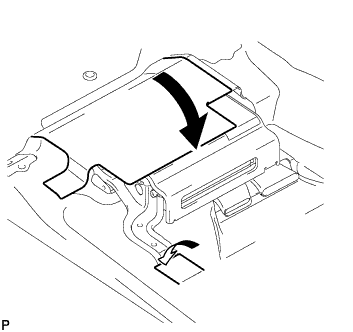

ЭБУ СИСТЕМЫ НАВИГАЦИИ > УСТАНОВКА |
| 1. УСТАНОВИТЕ ДЕРЖАТЕЛЬ ПРОИГРЫВАТЕЛЯ ДИСКОВ |
|  |
Совместите выступы А на кронштейне проигрывателя дисков с отверстиями в панели модуля системы навигации.
Установите кронштейн проигрывателя дисков и закрепите его 2 винтами В.
| 2. УСТАНОВИТЕ ДЕРЖАТЕЛЬ № 2 ПРОИГРЫВАТЕЛЯ КОМПАКТ-ДИСКОВ |
|  |
Совместите выступы А на кронштейне проигрывателя дисков № 2 с отверстиями в панели модуля системы навигации.
Установите кронштейн проигрывателя дисков № 2 и закрепите его 2 винтами B.
| 3. УСТАНОВИТЕ КРЫШКУ ПРОИГРЫВАТЕЛЯ КОМПАКТ-ДИСКОВ |
Установите крышку проигрывателя дисков и закрепите ее 3 винтами.
| 4. УСТАНОВИТЕ ПАНЕЛЬ МОДУЛЯ СИСТЕМЫ НАВИГАЦИИ С ДЕРЖАТЕЛЕМ |
|  |
Подсоедините разъемы.
Установите панель модуля системы навигации с кронштейном и закрепите ее 2 винтами и болтом.
|  |
Установите напольные коврики в первоначальном положении, как показано на рисунке, и введите в зацепление фиксатор.
| 5. УСТАНОВИТЕ ЛЕВОЕ ПЕРЕДНЕЕ СИДЕНЬЕ В СБОРЕ |
Для сиденья с ручным приводом:
Установите переднее левое сиденье (Нажмите здесь).
Для сиденья с электроприводом:
Установите переднее левое сиденье (Нажмите здесь).
Для сидений с функцией облегчения посадки "Walk In":
Установите переднее левое сиденье (Нажмите здесь).
| 6. ПОДСОЕДИНИТЕ ПРОВОД К ОТРИЦАТЕЛЬНОМУ ВЫВОДУ АККУМУЛЯТОРНОЙ БАТАРЕИ |
| 7. ПРОВЕРЬТЕ КОНТРОЛЬНУЮ ЛАМПУ АВАРИЙНОГО СОСТОЯНИЯ SRS |
Проверьте контрольную лампу аварийного состояния SRS (Нажмите здесь).